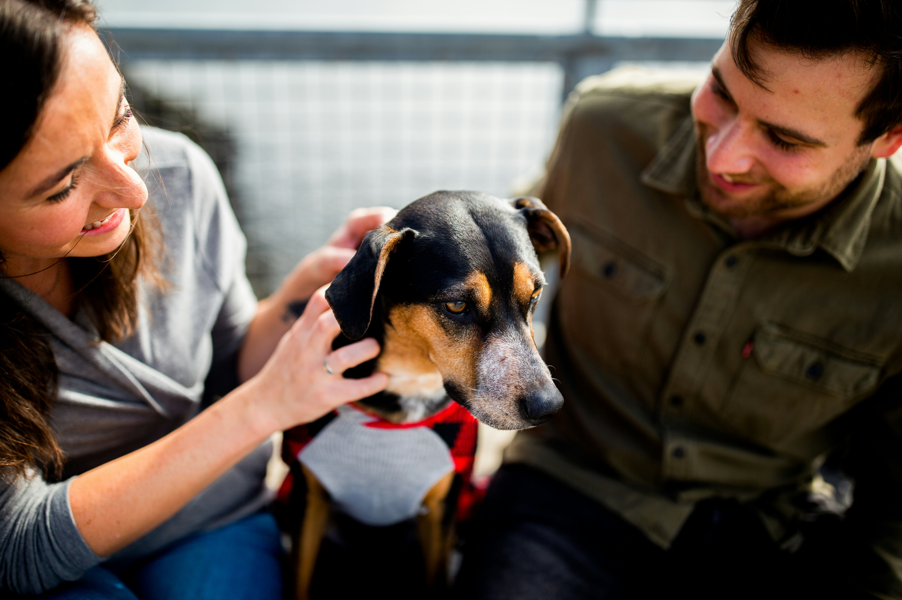

Every animal deserves a loving home
Make sure you're ready to commit, because they are!
Finding an animal to love is so exciting, but they are a big responsibility so just make sure you are ready. Explore the animals that are waiting to be rescued here. Come by and see them!
Adopt today More infoFeatured pets available
Pugsy (Age: 6)
This little fella is one of the most loving dogs you could meet, not just people but he has an insatiable appetite for cheese. He's been known to assert his dominance to the people going by the fence, but in his eyes, he's a top notch gaurd dog.

Simon (Age: 4)
If you're into curling up with a good book or watching TV for hours, Simon is your guy! Nobody knows how to chill better than Simon. He will also make it very known when his food bowl needs attending to.
We also accept volunteers who are passionate for serving our furry friends, sign up today.